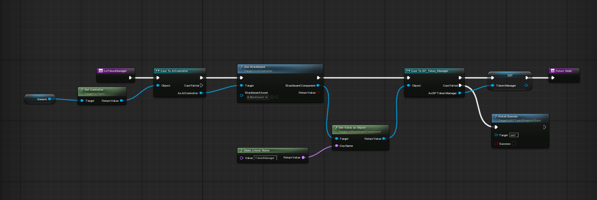
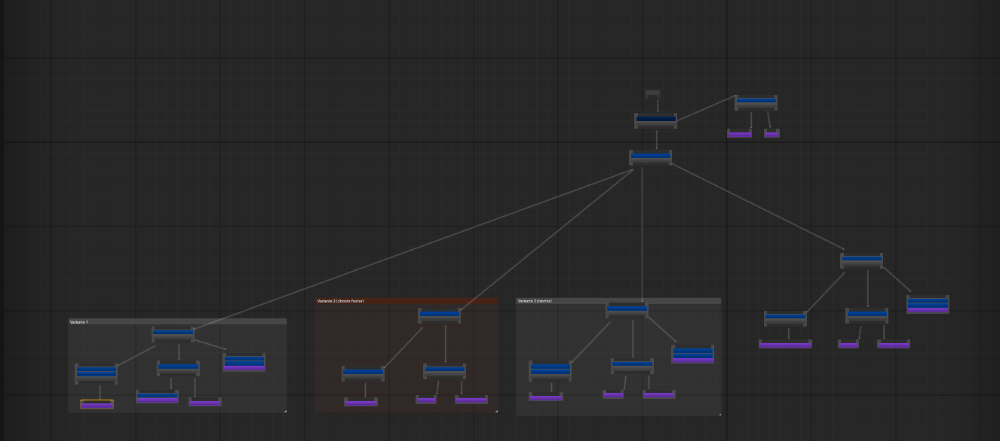
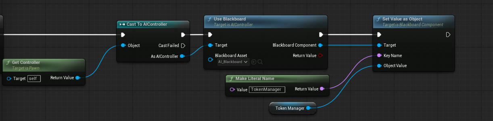

Ennemies and Unreal Engine's Behavior Tree
Context
For the purpose of the SAE Institute's school project, we made a Zelda Like game using Unreal Engine. Ennemies were needed in this project and so, it was up to me to design and make them reality.
1.1 Presentation of an ennemy made :
The following footage will show you one of the different ennemies made through the production phase of this project.

As an explanation, this ennemy in particular has two types of behavior. The first one(on the left) is a simple shooting ennemy with a certain range of detection. Once the Player seen, it will concentrate and eventually shoot its projectile, **a straight forward missile toward the player's position**. The second behavoir(on the right), focuses on mortar shots and works the vertical aspect of this project. It targets the player the same way as the first one but instead, shoots **a missile with a curve trajectory** toward the player's postion and leave a puddle on the ground that will slow the player if he walks in it.
1.2 Explanation in details :
Now that we know what this ennemy can do, lets analyze and dive deeper in details about how it works for both behavior :
1.2.1 Explanation of the first behavior : simple straight forward shooting ennemy
This first behavior is devided in 2 different sections : **seeking the player** and **shooting at him**. The first section makes the ennemy **rotates infinitely until it has found a player to shoot at**. The second section makes him turn toward the player, follows his movements and **prepares his shot** shown by the fx of vortex in front of him as well as the line growing red. Once ready, he shoots a simple projectile straight forward with its own velocity and size.

1.2.2 Explanation of the second behavior : simple mortar shooting ennemy
This second behavior is a **more difficult variant of the first behavior**. It possesses the same method to seek the player but the second section is much different. In fact, when this variante is ready to shoot, it calculates a mortar shoot trajectory toward the player and shoots a new kind of projectile. This new projectile makes a puddle on contact with the ground. This allows for a more strategic approach since that puddle can slow the player and unlock certain scenarios of **Level Deign** that wouldnt be possible otherwise.

Behavior Tree
2.1 The Tree itself and the nodes
For those ennemies to work, the best workflow was to use the **Behavior Tree** from **Unreal Engine**. But, this system requires knowledge as followed. This Behavior Tree work with **Sequences**, **Selectors** and **Tasks**. For this usage, sequences weren't useful. But in case it is needed for anything else, **sequences are made to follow a set of instructions each frame for example**. Selectors **select between two tasks or sequences depending on a factor**(could be a true, a false, a variable set to a certain number, etc..). And finally, tasks are **simple set of instruction you code using unreal engine's blueprint :**.

Over all, a behavior tree can quickly become quite huge once you take in conditions and multiple choices of behaviors for your ennemy. This is the behavior tree active for this squid ennemy in this project :

You can't see the nodes, but the matter is how this looks likes over all. If you happen to be curious about what's inside, know that each "bloc" with its own tree represents a set of instructions for a variante of this ennemy, some shooting faster, some shooting three missiles, etc...
2.2 The blackboard
Unreal Engine's behavior tree works with the help of a **Blackboard**. A convenient way to pass and stock all the variables necessary within the behavior tree itself such as the conditions for the selectors. It also allows your objects to "talk" to the behavior tree in their code wihtout having to use something else. But it has a default : every variable set is hard coded to be proprely set to the blackboard in runtime, one small error in the name and everything breaks. Here is an example showcasing this issue :

As you can see, we have to hard code a literal name and pass the value we want to change, on top of that, we have to do a cast which costs some performances. Even if not much, it still is a cost. Here is an example of the blackboard's visual and a detail for one of many vairables on it used for this ennemy :

Final conclusion
To conclude, this project allowed me to discover how to use Unreal Engine's behavior tree system. But, to be fair, unless mistake were made, this system still costs a lot of performances and can't be used on too big games and plateforms since too much ennemis can quickly overload your computer. Still, for our project, it was enough and even perfect and allowed us to have proper and precise control over our ennemies. Though, for bigger projects, i would recomend searching in plugins for one with better efficiency and easier setup.